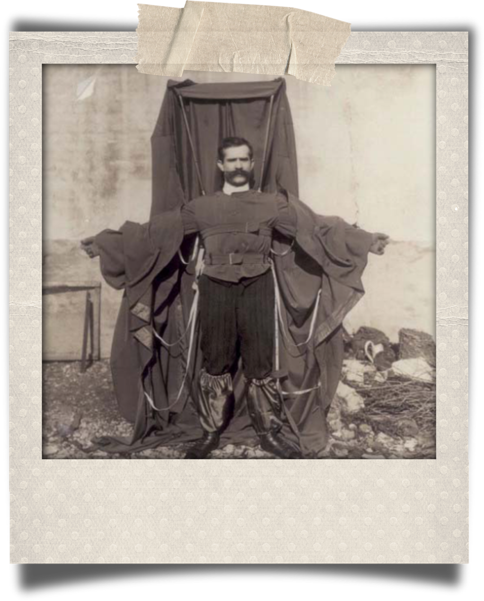

Luis Jiménez (died 2006, age 65) was killed while creating the famous Colorado statue of a blue horse, the Blue Mustang, when a section of it fell on him and severed an artery in his leg.
Ismail ibn Hammad al-Jawhari (died c. 1003–1010), a Kazakh Turkic scholar from Farab, attempted to fly using two wooden wings and a rope. He leapt from the roof of a mosque in Nishapur and fell to his death.
Jean-François Pilâtre de Rozier was the first known fatality in an air crash when his Rozière balloon crashed on 15 June 1785 while he and Pierre Romain attempted to cross the English Channel.
Otto Lilienthal (1848–1896) died the day after crashing one of his hang gliders.[7]
Aurel Vlaicu (1882–1913) died when his self-constructed airplane,[9] Vlaicu II, failed during an attempt to cross the Carpathian Mountains.[10]
Henry Smolinski (died 1973) was killed during a test flight of the AVE Mizar, a flying car based on the Ford Pinto and the sole product of the company he founded.[11]
Michael Dacre (died 2009, age 53) died after a crash that occurred while testing his flying taxi device designed to permit fast, affordable travel between regional cities.
Franz Reichelt (1879–1912), a tailor, fell to his death from the first deck of the Eiffel Tower while testing his invention, the coat parachute. It was his first attempt with the parachute, and he had told the authorities he would first test it with a dummy.
William Bullock (1813–1867) invented the web rotary printing press. Several years after its invention, his foot was crushed during the installation of a new machine in Philadelphia. The crushed foot developed gangrene and Bullock died during the amputation.
Alexander Bogdanov (1873–1928) was a Russian physician, philosopher, science fiction writer and revolutionary of Belarusian ethnicity who experimented with blood transfusion, attempting to achieve eternal youth or at least partial rejuvenation. He died after he took the blood of a student suffering from malaria and tuberculosis, who may have also been the wrong blood type.
Thomas Midgley, Jr. (1889–1944) was an American engineer and chemist who contracted polio at age 51, leaving him severely disabled. He devised an elaborate system of ropes and pulleys to help others lift him from bed. He became accidentally entangled in the ropes and died of strangulation at the age of 55. However, he is better known for two of his other inventions: the tetraethyl lead (TEL) additive to gasoline, and chlorofluorocarbons (CFCs).
alerian Abakovsky (1895–1921) constructed the Aerowagon, an experimental high-speed railcar fitted with an aircraft engine and propeller traction, intended to carry Soviet officials. On 24 July 1921, it derailed at high speed, killing 6 of the 22 on board, including Abakovsky
Sylvester H. Roper (1823–1896), inventor of the eponymous steam-powered bicycle, died of a heart attack or subsequent crash during a public speed trial in 1896. It is unknown whether the crash caused the heart attack or the heart attack caused the crash.
William Nelson (c. 1879−1903) a General Electric employee, invented a new way to motorize bicycles. He then fell off his prototype bike during a test run.
Francis Edgar Stanley (1849–1918) was killed while driving a Stanley Steamer automobile. He drove his car into a woodpile while attempting to avoid farm wagons travelling side by side on the road.
Fred Duesenberg (1876–1932) was killed in a high-speed road accident in a Duesenberg automobile.
Andrei Zheleznyakov, a Soviet scientist, was developing chemical weapons in 1987 when a hood malfunction exposed him to traces of the nerve agent Novichok 5. He spent weeks in a coma, months unable to walk, and years suffering failing health before dying from its effects in 1992/3.
Marie Skłodowska Curie, born Maria Salomea Skłodowska, was a Polish and naturalized-French physicist and chemist who conducted pioneering research on radioactivity. On 4 July 1934, she died at the Sancellemoz sanatorium in Passy, Haute-Savoie, from aplastic anaemia believed to have been contracted from her long-term exposure to radiation, some of which was from the devices she created.
Sabin Arnold von Sochocky invented the first radium-based luminescent paint, but eventually died, in 1928, of aplastic anemia resulting from his exposure to the radioactive material.
Henry Winstanley (1644–1703) built the first lighthouse on the Eddystone Rocks in Devon, England between 1696 and 1698. During the Great Storm of 1703 the lighthouse was completely destroyed with Winstanley and five other men inside. No trace of them was found.
John Day (c. 1740–1774), English carpenter and wheelwright, died in test of experimental diving chamber.[20] Horace Lawson Hunley (1823–1863), Confederate inventor, drowned with seven other crew members during a test of his invention, the first combat submarine, which was later named the H. L. Hunley.
Thomas Andrews, Jr. (1873–1912) was an Irish born British businessman and shipbuilder. He was managing director and head of the drafting department of the shipbuilding company Harland and Wolff in Belfast, Ireland. As the naval architect in charge of the plans for the ocean liner RMS Titanic, he was travelling on board that vessel during her maiden voyage when the ship hit an iceberg on 14 April 1912. He perished along with more than 1,500 others. His body was never recovered.
Karel Soucek (1947–1985) was a Czech professional stuntman living in Canada who developed a shock-absorbent barrel. He died following a demonstration involving the barrel being dropped from the roof of the Houston Astrodome. He was fatally injured when his barrel hit the rim of the water tank meant to cushion his fall.
Max Valier (1895–1930) invented liquid-fuelled rocket engines as a member of the 1920s German rocket society Verein für Raumschiffahrt. On 17 May 1930, an alcohol-fuelled engine exploded on his test bench in Berlin, killing him instantly.
Mike Hughes (1956–2020) was killed when the parachute failed to deploy during a crash landing while piloting his homemade steam-powered rocket.